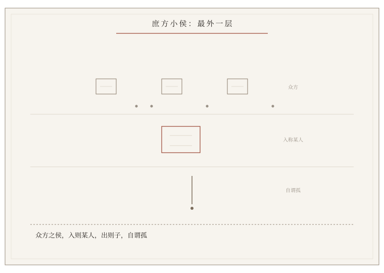

曲礼下 · 二·五十三 · 第 176 课
众方小侯入天子之国称「某人」，于外称「子」，自称「孤」。注「谓戎狄子男君也。男者于外亦曰男，举尊言之」。
说什么事：最外一层诸侯的三种称呼，兼及其摈辞之等。
落在哪一层：礼。论名之最后一格。
为何编在此位：四夷之长之后，再列其小者。曲礼下论天下之称，至此而尽。
【经】庶方小侯，入天子之國曰「某人」，於外曰「子」，自稱曰「孤」。
【注】謂戎狄子男君也。男者於外亦曰男，舉尊言之。
【疏】庶，众也。小侯谓四夷之君，非为牧者也，以其贱，故曰众方也。若入王国，自称曰某人，若牟人、介人也。六服之内，但举伯之与牧，不显其余诸侯；九州之外，既举大国之子，又举其余小国者，以六服诸侯下文别更具显，故于此略之。「于外曰子」者，此君在其本国外，四夷之中，自称依其本爵，或子或男，今言子，是举其尊称耳，若男亦称男也。「自称曰孤」者，若自与臣民言则曰孤，孤者特立无德能也。凡二伯自称及介传命曰「天子之力臣」；若摈者传命于天子，则曰「天子之吏」；于诸侯及朝廷则曰「天子之老」。九州之长及介传命则曰「某土之守臣某」；其馀诸侯介传命云「某土之守臣某」；摈者传命云「某侯某」。九州之外大国之子，介传命「某屏之守臣某」；摈者告天子称「某子某」。庶方小侯，介传命云「某土之孤某」；摈者告天子亦应云「某孤某」。其二伯以下，对天子皆称名也。
庶方 疏「庶，众也」「以其贱，故曰众方」。
某人 疏「若牟人、介人也」，以国名加「人」。
孤 疏「孤者特立无德能也」。
介传命、摈传命 介为通介，摈为接宾。两环之称有别。
某屏之守臣某 《玉藻》文，边邑之君之称。
众方小侯入天子之国称「某人」，在本国之外称「子」，对自己人称「孤」。
此节只有三句，却是一整套称谓的末梢。疏趁此把二伯以下各级的摈辞排了一遍：力臣、吏、老、守臣、屏之守臣、孤某。天下之称，到此收尽。
第一层 贱故曰众 疏「以其贱，故曰众方」。同是「方」，二伯曰分陕，牧曰州，小侯曰「庶方」——一个「庶」字，就把他排到了最末。
第二层 举尊以称 本爵或男，而于外举子。与上节「虽大曰子」同一手法：所举者高，所守者本。
第三层 孤之义 疏「特立无德能」。此语看似贬，实为处境之实：小侯孤处于四夷之间，无大国可依。礼给的这个自称，恰是他的位置。
第四层 称谓之全谱 疏末一段最可宝：二伯、州牧、九州外大国之子、庶方小侯，各有介传命与摈传命两套辞。礼的精密，常在这种别人看不见的地方。
与今日何干 一份公文里，称谓分层越细，越说明这套体系曾认真运转过。
| 左 | 右 |
|---|---|
| 庶方小侯 | 四夷子男之君，非牧 |
| 入天子之国曰某人 | 如牟人、介人 |
| 于外曰子 | 依本爵，举尊称 |
| 自称曰孤 | 特立无德能 |
| 介传命曰某土之孤某 | 摈者告曰某孤某 |
| 二伯以下对天子皆称名 | 名者，质贱之称 |
画三层由外而内的框：最外层框大而空，其上置三枚极小方点（示「庶方」之多）；中层框内一枚小方牌；内层框内一枚稍大的方牌，牌下有一短横（示摈辞之等）。三层框之间以细竖线各断一处（示层级之隔）。另在最外框左角画一个孤立的短竖（示「孤」）。不写文字。赭色只用在最内层那枚方牌下的短横。
